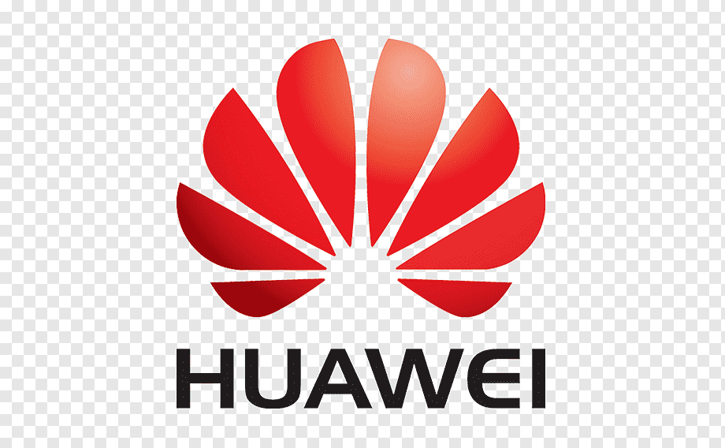

Empresa
Presencia técnica para el mercado nacional de telecomunicaciones
Demercom E.I.R.L. desarrolla proyectos de redes y telecomunicaciones para empresas, operadores e integradores. Ejecutamos implementación, configuración, mantenimiento y soporte en campo para infraestructura crítica.
Misión
Brindar soluciones integrales en redes y telecomunicaciones con excelencia técnica, seguridad y compromiso, atendiendo las necesidades de nuestros clientes mediante personal especializado, tecnología adecuada y ejecución confiable en campo.
Visión
Consolidarnos como una empresa referente en el mercado nacional de telecomunicaciones, reconocida por la calidad de sus servicios, capacidad operativa e innovación en proyectos de infraestructura tecnológica.
Por qué elegir Demercom
Capacidad técnica para proyectos exigentes
Combinamos experiencia en campo, personal especializado y ejecución responsable para responder a las necesidades de operadores, integradores y empresas.
Experiencia en campo
Participación en proyectos de redes móviles, nodos, microondas, energía e infraestructura técnica.
Personal especializado
Equipo técnico orientado a implementación, configuración, mantenimiento y soporte en sitio.
Ejecución integral
Atención de servicios de telecomunicaciones, fibra óptica, cableado, energía, seguridad y obras civiles.
Compromiso operativo
Trabajo enfocado en cumplimiento, seguridad, calidad técnica y continuidad del servicio del cliente.
Servicios
Nuestros servicios
Servicios técnicos para redes móviles, nodos, radioenlaces, energía, seguridad, cableado estructurado y obras civiles.
Redes móviles y nodos
Implementación y servicio de proyectos 2G, 3G, 4G, LTE y 5G, además de nodos para Entel, Huawei, Nokia y Telefónica.
Fibra óptica y acceso
Implementación de redes de fibra óptica, proyectos PAG, OLT, GPON, FITEL y despliegues de acceso para operadores.
Radioenlaces y microondas
Instalación y soporte de radios microondas Huawei, Ceragon, Ericsson y Radwin para conectividad crítica.
Energía e integración
Cometidas eléctricas AC/DC, tableros integrados, rectificadores, ampliación de potencia y soluciones de respaldo.
Cableado y networking
Redes de cableado estructurado CAT 5E, 6 y 6A, además de instalación y configuración de routers y switches.
Infraestructura y seguridad
Obras civiles, estaciones base, casetas de drywall, pozos a tierra e implementación de sistemas de seguridad.
Proyectos
Experiencia ejecutada en campo
Trabajos realizados en nodos, radioenlaces, energía, obras civiles, equipamiento y mantenimiento de infraestructura.
Reubicación de nodos
Migración de equipos de Nodo Gul y Nodo Bafi. Migración de enlaces MW.
Proyecto RANCO
Swap e implementación de tecnologías 1900 MHz y 2.6 MHz: antenas, RRU, BBU y sectorización.
Proyecto APT 700 MHz
Swap de antenas, RRU, tarjetas en BBU y sectorización para tecnología 700 MHz.
Power cord y baterías
Swap de power cord, cableado de energía 220V, configuración de IP rectificador SMU y baterías de litio.
Obras civiles
Cimentación de pedestal para monopolo, construcción de estaciones base y casetas de drywall.
Microondas y salas técnicas
Instalación de microondas FITEL Piura, equipos en sala BSS/MGW/MSC y trabajos de energía AC/DC.
Clientes
Empresas y marcas con las que se ha trabajado
Telrad
Eltek
MER Telecom
OLO Internet
Incobech
ZTE

Entel BMP Ingenieros F-1 ServicesContacto
Datos de contacto
Cuéntanos qué servicio necesitas y coordinamos la evaluación técnica para tu proyecto.
Empresa
DEMERCOM E.I.R.L. · RUC 20523715624
Teléfonos
Dirección
Jr. Carhuaz 1425, Covida, Los Olivos